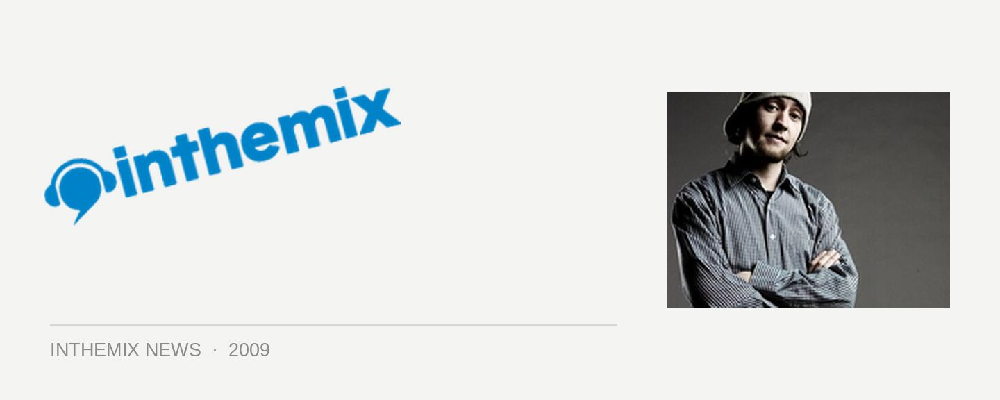

Our Backyard returns to Melbourne
Next Sunday September 20th Our Backyard returns to the Arts Centre in Melbourne for an event that aims to showcase hip hop in all of its different facets – expect DJs, MCs, breakers, hip hop dance crews, it’ll all be given equal footing with performances from both professional and community-based performers.
Looking at the performers across the different disciplines, the proceedings will be hosted by Yung Philly and Timomatic, with performances from DJ Peril, DJ Perplex and Dig Deep vs City Beatz, along with an extra special performance that will see live funk band Deep Street Soul hitting the stage for an all-star jam with Julez, Justice, Little G, Mantra, MC Momo and Urban Monk.
That’s not to mention some of Melbourne’s most up-skilled breakers, MCs, dance crews and more, offering up very best that the city’s hip hop culture has to offer.
The Arts Centre & The Push pres. Our Backyard 2009, hits the Arts Centre, Hamer Hall on Sunday 20th September from 11.30am-4pm.